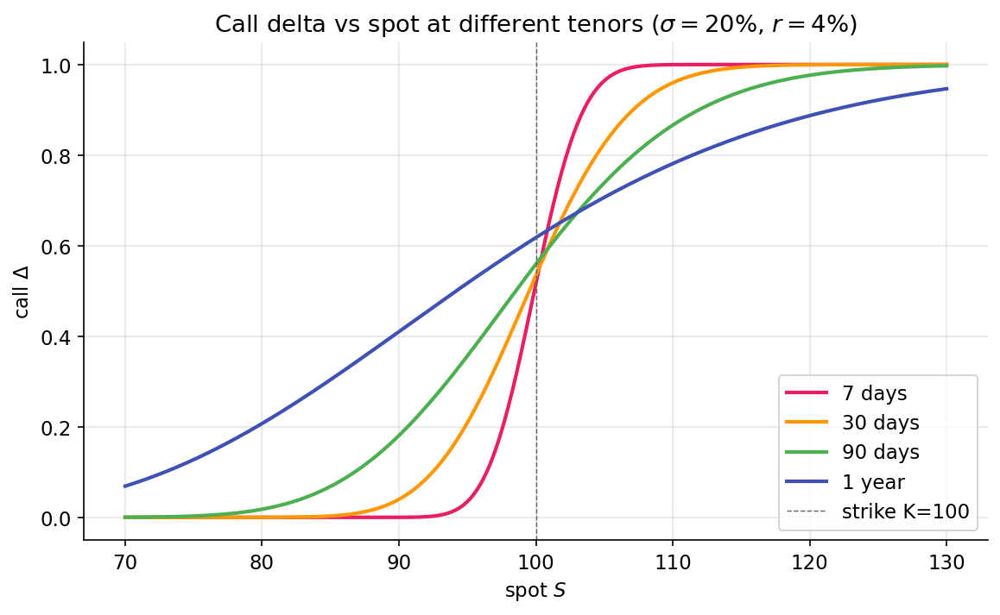

How much does the door move¶
When the wind shifts, the door moves. Not by the whole of the wind. Only some of it. And we ask, quietly: this much? This much.
We call the answer delta.
The Black-Scholes derivation produced a hedging portfolio \(\Pi = C - \Delta S\) whose first-order risk cancels. The coefficient \(\Delta\) — the partial derivative of option value with respect to the underlying — simultaneously describes exposure, hedge ratio, and an approximate probability of exercise.
Definition¶
Delta is the dollar change in an option's value per $1 change in the underlying. It is a rate evaluated at a specific \(S\), valid for small moves. For a European call under Black-Scholes:
so \(\Delta \in (0, 1)\). For a European put, by put-call parity:
so \(\Delta \in (-1, 0)\).
A call's price rises with the underlying, so its delta is positive. A put's price falls with the underlying, so its delta is negative.
Three regimes¶
Deep ITM: \(\Delta \to \pm 1\)¶
Near certainty, the option walks beside the stock. Step for step.
When a call's strike is well below current spot and expiry is near, the option is almost certain to finish ITM. Its value at expiry equals \(S_T - K\), which moves dollar-for-dollar with \(S_T\), so \(\partial V / \partial S\) approaches 1. A deep-ITM call behaves like stock net of a fixed obligation.
For a deep-ITM put, \(\Delta \to -1\).
Deep OTM: \(\Delta \to 0\)¶
Far from the strike, the option ignores the wind.
When a call is far out of the money and near expiry, small moves in \(S\) have little effect on the probability of finishing ITM, and \(\partial V / \partial S\) approaches zero.
ATM: \(\Delta \approx 0.5\) for a call, slightly above¶
When \(S = K\) with time remaining, the call has approximately a 50% risk-neutral probability of finishing ITM, and delta is approximately 0.5 — though not exactly. For a call with positive time and non-zero vol, \(d_1 > d_2\), so \(N(d_1) > N(d_2)\). An ATM call's delta typically sits in 0.52–0.55. The offset reflects the asymmetry of upside versus downside payoffs.
Across a range of spot and at several tenors, the three regimes form one smooth curve:

Delta as hedge ratio¶
The Black-Scholes derivation produces this directly: the portfolio \(\Pi = C - \Delta S\) is locally riskless. A long call's exposure to the underlying equals that of \(\Delta\) long shares; shorting \(\Delta\) shares neutralizes the first-order exposure.
A worked example. A market maker's position.
Ten SPY calls, strike \(\$450\), 30 days to expiry, SPY at \(\$450\). Each contract covers 100 shares. Call delta at these parameters is 0.53.
- Position delta: \(10 \text{ contracts} \times 100 \text{ shares/contract} \times 0.53 = 530\) share-equivalents.
- Delta hedge: short 530 shares of SPY.
- Net position: approximately delta-neutral. P&L is near zero for small moves.
Delta-neutral is not profit-neutral. It is first-order neutral. Gamma remains. Theta eats at the premium. The whole point of the hedge is to isolate those second-order effects — to hold the option still enough to trade the vol beneath it.
Delta as approximate probability¶
Traders often describe delta as the probability of finishing ITM. The description is approximate:
\(\Delta\) equals the probability only in the limit of zero volatility or zero time. For a 30-day option with \(\sigma = 20\%\), \(\sigma \sqrt{T} \approx 0.058\), and the gap is small. For LEAPS, \(\sigma\sqrt{T}\) can exceed 0.4, and delta can overstate exercise probability by several percentage points.
A useful lie for short-dated options. A less useful one for the long-dated.
Delta-one products¶
Instruments that move one-for-one with the underlying have \(\Delta = 1\): the underlying itself, futures (subject to cost-of-carry), tracking ETFs (within tracking error). "Delta-one" desks at banks trade these products — baskets and swaps whose risk profile is purely directional, with no convexity.
A covered call (long 100 shares + short 1 call) has net delta \(100(1 - \Delta_\text{call})\): reduced upside exposure, retained downside until the call expires.
Delta is not constant¶
The door moves differently at different spots. The hinge is not a point. It is a curve. We will call the curve gamma.
Delta is a function of \(S\), \(t\), and \(\sigma\). The next lesson develops the most important of delta's own sensitivities. A delta hedge correct at \(t_0\) is no longer correct at \(t_0 + dt\). The accumulated P&L of a delta-hedged position is not zero; it depends on realized versus implied volatility.
Summary¶
- Deep-ITM calls move like stock and deep-OTM calls are nearly insensitive; delta varies smoothly from 0 to 1.
- A market maker neutralizes directional risk on a quoted call using a single number.
- "Delta ≈ probability of ITM" is usable shorthand for short-dated options and fails for long-dated ones as the \(\sigma\sqrt{T}\) gap between \(N(d_1)\) and \(N(d_2)\) widens.
Implemented at¶
trading/packages/gex/src/gex/greeks.py:52 — bs_delta_call(spot, strike, rate, sigma, tenor_years) returns \(N(d_1)\), vectorized. Used in the 25-delta skew computation (Part IV): given a target delta like \(0.25\), the skew module finds the strike whose call has that delta and reads the IV there.
How much does the door move. Next: what shape the hinge traces.